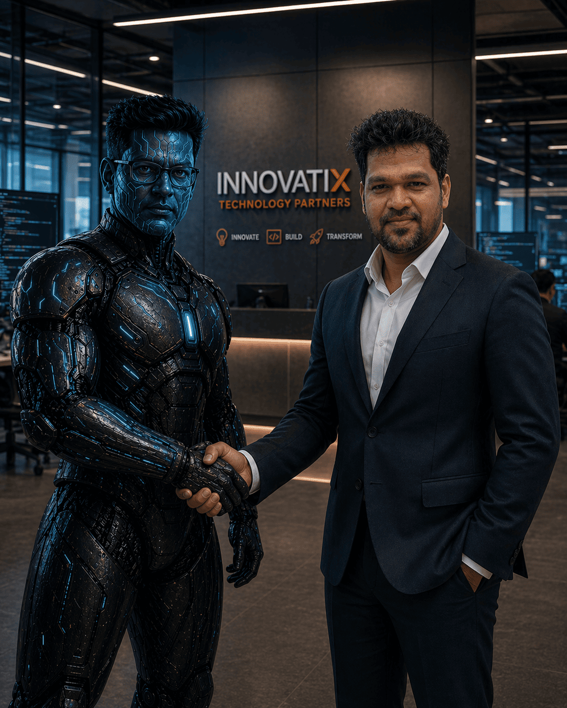

0%
Reduction in Manual Test Authoring
17+ years transforming enterprise quality engineering with AI, automation, and scalable systems — across banking, healthcare, scientific intelligence, and industrial IoT.
I architect quality engineering organizations that ship faster and safer. Over 17 years I've led enterprise transformations across banking, healthcare, scientific intelligence, law enforcement, and industrial IoT — building Centers of Excellence, shift-left programs, and AI-native automation platforms from the ground up.
My focus today is the intersection of LLMs and quality engineering: turning requirements into executable tests, autonomous defect triage, predictive risk analysis, and intelligent automation that lets non-technical stakeholders contribute. The result is fewer defects in production, shorter release cycles, and engineering teams that move with confidence.
From governance and KPIs to LLM-driven automation and CI/CD pipelines.
Strategy, governance, and metrics that translate quality into business outcomes.
LLM-powered test generation, autonomous agents, and intelligent triage.
Frameworks tuned for stability, speed, and parallel CI execution.
Production-grade code for frameworks, tooling, and data pipelines.
Pipelines that turn every commit into a tested, releasable artefact.
Full-stack quality across functional, performance, and integration testing.

Production-grade AI platforms, agents, and dashboards engineered for measurable enterprise lift — not side projects.
An AI-powered platform that runs the full QA lifecycle. Continuum converts business documents into functional specs, generates test cases, builds Selenium / TestNG / Cucumber automation, drafts bug reports, and translates code between languages — orchestrated by multi-LLM agents with retrieval over historic defects.
An AI-powered test authoring platform with two flagship modules. Test Runner turns natural-language steps into live browser automation; Code2Test reverse-engineers business rules from legacy source code and generates production-grade test suites — confidence-scored, reviewable, and exportable in your team's format of choice.
Executive-ready quality insights. Real-time DRE, coverage, sprint velocity and regression health across product lines — adopted across the QA Center of Excellence.
A taste of how Continuum reasons about quality. Tap a prompt — it answers instantly.
Here's a starting suite for a typical login flow:
Want this exported to Excel, Gherkin, or pushed straight to your CI?
Stood up enterprise-wide CoE with shared frameworks and KPIs across 8 product teams.
Delivered zero critical defects in production across quarterly Clarivate releases.
Drove dramatic gains in testing throughput via AI-augmented automation.
Open to senior QA leadership, AI-driven automation architecture, and advisory engagements. I respond to every message personally.